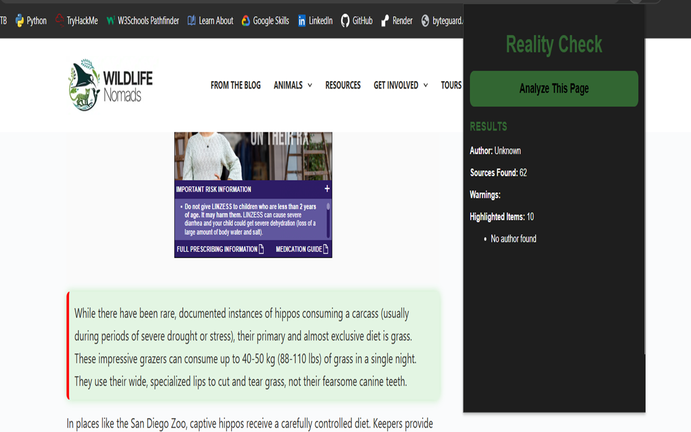
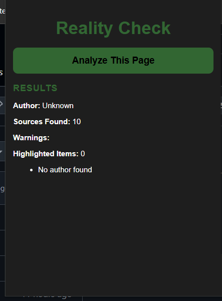

Chrome Extension
Making online content easier to verify, rather than accepting any information blindly.
Reality Check is a Chrome extension designed to help users evaluate online content more critically. It analyzes webpages for potential indicators of AI-generated content, unsupported claims, and credibility signals.
The goal is not to tell users what to believe, but to encourage critical thinking and provides additional context while browsing the web.


As AI-generated content becomes increasingly common online, it can be difficult to determine where information comes from and whether claims are properly supported.
I built Reality Check to help users slow down, think critically, and make more informed decisions about the information they encounter.
Building Reality Check strengthened my understanding of browser extensions, DOM manipulation, content scripts, user interface design, and how to analyze webpage content in real time.